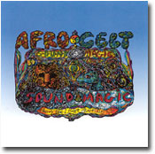

|

■合体の美学
前回、音階の話のつづきを書くと匂わせておきながら、いきなり「合体」の話である。第1回の「くり返す音楽」からここまで、なんと連続性のないシリーズだと反省しているが、いいではないか、なんてったって〈カラフル・ミュージック・パフェ♪〉だから。
それで、なんでまた「合体」？ 最近、政財官からエンタテインメントまで、癒着・合併・合体の話題に事欠かない今日この頃、音楽でもちょっとそんな事に触れてみようと思ったわけで。
音楽における合体。思いつくだけでも、次から次ととめどなく事例が浮かんでくる。これも整理しないといけないかな。
1． 異ジャンルとの合体
音楽と美術、映像、文学、ダンス……などとの合体（あるいはコラボレーション）。一つ一つのアートの出会いから、映画やバレエ、オペラ、歌舞伎といった総合芸術、同様に歌と伴奏音楽、ダンス、人形劇や影絵などが一体となった世界各地のさまざまな伝統芸能がこれにあたる。
WOMAD（ワールド・オヴ・ミュージック・アンド・ダンス）は、1982年にピーター・ゲイブリエルを中心に発足した、音楽とダンスによるワールド・ミュージックの祭典である。また、音楽と美術双方に才能を発揮するブライアン・イーノや石井竜也らの活動も注目される。
2．アーティスト同士のコラボレーション
〈ソプラノ・サックス：ジョン・コルトレーン、ピアノ：マッコイ・タイナー、ベース：スティーヴ・デイヴィス、ドラムス：エルヴィン・ジョーンズ〉なんていうふうに、ジャズでは一般的なこと。あとはたとえば、1985年ライヴ・エイドでの「ウィ・アー・ザ・ワールド」、マイケル・ジャクソン＆ポール・マッカートニーの「セイ、セイ、セイ」、ブエナ・ビスタ・ソシアル・クラブ、Steady&Co.、小室哲哉やつんくプロデュースのあれこれ、奥田民生＆スカパラ等々、数え切れない。
3．異ジャンル音楽の合体
これはもう収拾不可能なほど複雑で多様なパターンがある。ざっと例をあげてみよう。
［クラシック＋ジャズ］なら「プレイ・バッハ」で知られるジャック・ルーシェやグルダなど。［クラシック＋ロック］ならビートルズ、クイーン、プログレ系バンドのあの曲この曲……。［インド音楽＋ロック］といえば、ジョージ・ハリスン、クーラ・シェイカー。［現代音楽＋ロック・ジャズ］では、キング・クリムゾン、クロノス・カルテット、山下洋輔など。[現代音楽＋邦楽]は、尺八と琵琶がオーケストラと共演する武満徹「ノヴェンバー・ステップス」（1967）が先駆となり、一時期、日本の現代音楽のトレンドになった。［邦楽＋他ジャンル］は最近とても元気だ。三味線の吉田兄弟や国本武春、雅楽の東儀秀樹、民謡歌手の伊藤多喜雄、太鼓の林英哲らの活躍がめざましい。
この先はもう「ごった煮」状態に、いろいろなジャンルが入り混じっている例。世界各地の民謡や伝統音楽やポピュラー音楽、それに西洋中世の音楽、クラシック、ジャズ、ゴスペル、R&B、ロック、ラップ、テクノ……これらの（いや、もっといろいろある！）ジャンルのあれとこれ、これとあれとこれ、これとあれとこれとそれとあれ……が合体したものがいろいろあって、楽しい。
70年代にフェラ・クティが生んだアフロ・ビート、80年代在英インド系アジア人たちが熱狂したバングラ・ビート、そして80年代末〜90年代初頭のいわゆる「ワールド・ミュージック」と呼ばれた世界各地のポピュラー音楽（当時は来日もCDリリースもすごかった）。西アジア、東欧あたりの民族音楽にアフリカやラテンのリズム、ラップなんかをごちゃまぜにした3ムスタファズ3『ショッピング』がその最たるものだろうか。シンガポールの「おかしな中国人」ディック・リーの『マッド・チャイナマン』も、それに劣らず多言語多ジャンル入り混じる、おもちゃ箱ひっくり返し状態の無国籍音楽だ。YMOとして世界のテクノ・シーンをリードした坂本龍一、細野晴臣らも、この頃から「世界音楽」を静かに、情熱的に発信する。日本勢では、バンドというか“ド派手な歌姫擁する楽隊”といった感じの上々颱風（しゃんしゃんたいふうん）が、民謡、音頭、沖縄の音楽、ロック、レゲエなどを取り混ぜ、目だけでなく耳にも色とりどり極彩色の音世界を届けてくれる。
もう少し落ちついたところで、その名のとおりアフリカとケルトの音楽を合体させたアフロ・ケルト・サウンドシステムと、アイルランドの伝統音楽にロックやゴスペルなどを導入したディ・ダナンは、わたしのお気に入り。
そもそも、音楽の歴史は異ジャンルの合体・融合・交配・影響関係によって進化してきたのである。アメリカだけ見ても、ジャズは19世紀末〜20世紀初頭、アフリカのリズムとヨーロッパの和声が合体して生まれ、R&Bは1940年代にスウィング・ジャズ、ブルース、ブギウギ、ゴスペルが融合してできた。ソウルは60年代にゴスペルとR&Bから、ロックは50年代中頃、カントリーとR&Bの合体から生まれた。レゲエは60年代末のジャマイカで、アメリカのラジオから流れるR&Bと地元のスカやロック・ステディが結びついて生まれた。同じ頃、ニューヨークに住むプエルトリコ人たちは、ラテンのリズムとR&Bのエイト・ビートを合わせた音楽サルサを生んだ。インドネシアのクロンチョンは「世界最古の混血音楽」と言われるように、16世紀頃の統治国ポルトガルの音楽と、大航海時代に経由したアフリカやアラブの国々の音楽が複雑に混ざり合っている（それにしても、なんて気持ちいい音楽だろう。独特のリズムが、なんともやさしくかわいいのだ）。
昔は民族の移動や植民地支配が、音楽を含むあらゆる文化の構造をじわじわと変える要因だったが、現代は衛星放送やインターネットなどで音楽の情報も世界同時に伝わるため、その影響関係は一層複雑に多様になって当然だろう。『踊るマハラジャ』など超ハイテンションなインドの映画音楽は、そうやって生まれた究極の合体音楽かもしれない。ロック、スカ、レゲエ、ファンク、ラップ、ハウス……など、ありとあらゆる音楽がてんこ盛り。シタールのストイックなソロ演奏の一方でこれだ。なんだかとてつもないインドの懐の広さを感じる。
こうした異ジャンル同士の合体に含まれるものとして、独立した楽曲同士の合体がある。
4．楽曲同士の合体
最も有名で美しい例の一つが、グノーの「アヴェ・マリア」。バッハの「平均律クラヴィア曲集第１巻第１番」のプレリュードをそのまま伴奏にして、メロディーを乗せたものだ。バッハの曲はよく土台に使われる。「Ｇ線上のアリア」の上でオリジナルのメロディーを歌う、プロコルハルム「青い影」。同曲でラップするスウィート・ボックス「エヴリシング・ゴナ・ビー・オーライト」。ブロンディ「ノー・エグジット」は、バッハの「トッカータとフーガ 二短調」をそのまま冒頭に使い、そのあとラップを重ねる。バッハだけでなく、同じバロックのアルビノーニ「アダージョ」やパッヘルベル「カノン」なども、前出のスウィートボックスやヴァイタミンCの曲で、ラップや歌の土台として使われている。
クラシック系ではフォーレの「パヴァーヌ」が、イギリスの若いポップ・グループS CLUB７（エス・クラブ・セヴン）「ナチュラル」に使われているし、渋いところでクリーム「サンシャイン・オン・ユア・ラヴ」のリフが、日本のラップ・グループ、ライムスターの「ウワサの真相」を終始支え通している。けっこう以外な組み合わせがあるものだ。それが見事にはまっていたりするので、おもしろい。
Jポップには日本ならではのユニークな合体が試みられている。たとえば、アニメタルと演歌メタル。どちらも90年代後半に、日本のハードロック／へヴィメタル（HR/HM）のバンド、アンセムのメンバーが立ち上げたプロジェクト。前者は「ガッチャマン」「マジンガーＺ」などヒーローもののアニメ主題歌をアレンジしたもの。アニメとHR/HM の友好関係は、メタルの王者ジューダス・プリースト『復讐の叫び』あたりのジャケットが象徴している。演歌メタルはHR/HMの名曲を伴奏に演歌の名曲を歌うというもので、こちらも強烈なラインナップ。レインボウの「キル・ザ・キング」＋「北の宿から」、ヴァン・ヘイレン「ジャンプ」＋「北酒場」、ディープ・パープル「ハイウェイスター」＋「天城越え」といった具合だ。
桑田佳祐さんがあるTV番組で、唱歌とロック・ポップスの名曲を合体させる試みをしていたが、「かごめ」＋ツェッペリン「天国への階段」、「むすんでひらいて」＋ビートルズ「涙の乗車券」など、どれも見事にはまっていた。同様の試みを持ち芸にしているピアニスター・ヒロシさんは、華麗なピアノ演奏で歌謡曲からポップス、童謡、クラシック、ロック、ジャズなど、ごちゃまぜの合体音楽をスマートに披露する。
彼の“作品”は、音楽を合体させるいくつかの方法の見本として非常にわかりやすい。モーツァルト「アイネ・クライネ・ナハト・ムジーク」と「スーダラ節」はG調、同じくモーツァルト「交響曲第40番」と「さそり座の女」はGマイナー調、「ゲゲゲの鬼太郎」とリスト「ラ・カンパネラ」あるいは「ピンク・パンサー」はCマイナー調。同じ調同士なら合体は可能だ。同じ調の曲は山ほどあるだろうが、あえて縁もゆかりもなさそうな意外な2曲を取り合せることで、合体としてのインパクトを強くしている。アニメタルも演歌メタルも桑田さんの場合もみな同様で、同じ調（あるいは旋法的特徴）の曲を見つけるセンスと奔放な遊び心があってこそ成せる芸なのだ。
これがタテの合体なら、メロディーやコードの共通部分でリンクしていくヨコの合体もある。ベートーヴェンのピアノ・ソナタ「月光」の途中から、ビートルズ「ミッシェル」にスライドしたり、「メリーさんの羊」と「水戸黄門」の主題歌の冒頭が「ミ〜レドレミミ」まで同じことを利用して、2曲を自由自在につなげたり。ショパンの「ピアノ協奏曲第1番」のメロディーが「北の宿から」にシフトするのも、まったく同じ理由から。この曲をレインボウとタテに合体させた演歌メタルより、無理のない合体かもしれない。
調やコードやメロディーにとらわれずに、自由に簡単に合体できるのがラップだ。前出のスウィートボックスやブロンディ、ライムスターなどのように、バッハやクリームといった認知度の高い既成曲に乗っかっていくのが、印象的でおいしいやり方のようだ。
音楽の世界には、こんなふうにいろいろな形の合体がある。よりパワフルに、よりバラエティ豊かに、あらゆる可能性を求めて、これからも合体作業は続くだろう。
昔からある、子供が大好きな合体ロボット。ゾウやキリン、車や飛行機の形をしたパーツを合体させると大きな強いロボットになる。予定調和の完成形に飽きてくると、子供は好き勝手に組み方を変えて（接合が難しければ、強引にセロテープや接着剤でくっつけたりして）、変てこりんな自分だけの合体ロボットを作り始める。釘や王冠やボトルキャップや毛糸をくっつけて、壊れた別のおもちゃの部品や広告紙の切れ端を張りつけて、油性ペンで顔を描き換えて、なんじゃこりゃ?! という物体を作り上げていく。一方で、何もされずに、元の状態のままていねいに扱われる人形たち。この扱いの差は何なんだ？ と思う。
近頃流行りの「変食」。ごはんにイチゴと牛乳と砂糖をかけたり、肉ジャガに思いっきりマヨネーズをかけたりして食べる。当人たちは「おいしい」という。これも一種の合体だ。
可能性は食材の数だけ無限大。でも、白飯は白飯、みそ汁はみそ汁で、この先もずっと受け継がれていくだろう。今の「変食」という異種合体食の何かが、果たしてかつてのあんパンのように市民権を得て後世に残るだろうか？
伝統音楽、オリジナル作品、一個のアーティスト……侵されることなく守られるべき存在がある。その一方で自由にエネルギッシュに展開していく音楽の世界がある。合体ロボと焼き魚定食を想いながら、XTCの「イングリッシュ・セツルメント」を聴く。キャッチコピーに「あくまでもイギリス」と書いてあった。ふうん……。
|